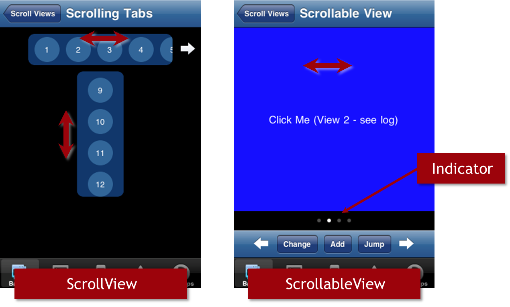
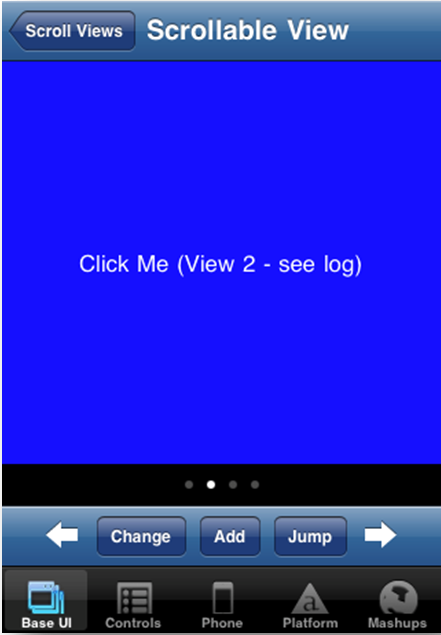

API Deep Dive: Scroll Views
Advanced Titanium Mobile Development
Module time: 60 mins
(30 mins teaching, 30 mins lab)
Agenda
- ScrollViews and ScrollableViews
- ScrollViews in depth
- ScrollableViews in depth
- Web views as scrollable containers
In this module, we'll look at the three types of scrolling content containers

ScrollView — scrollable area of content, doesn't have to fill viewport, scroll in either direction
ScrollableView — screen-size content area with 'page' indicator
sort of like a filmstrip of views shown within a container
views snap into place: you can't end up halfway between views after a swipe

var sv = Ti.UI.createScrollView({
/* properties */
});
- Key Properties:
- height / width
- contentHeight / contentWidth
- showHorizontalScrollIndicator / showVerticalScrollIndicator
- scrollType (vertical or horizontal, Android only)
Height/width = what's visible to the user — this is like the size of a porthole through which you're viewing the content
Content height/width are dimensions of the actual content
Deeper Dive into ScrollViews
Content height & width
Zooming content
- zoomScale
- minZoomScale
- maxZoomScale
canCancelEvents to block subview events
Set content height to auto and it will scroll just enough to show the content.
Set it to a specific size and that's all you'll get. Content could get cut off or scroll could continue well past available content
Users can zoom in/out, which you can control
canCancelEvents = boolean = whether the ScrollView would block touch-related events from passing into the view that's being scrolled. For example, to block a scroll event being fired on a child ScrollView, thus stopping the parent from scrolling.
Android - scroll horizontal or vertical, not both
iOS - Set 'bounce' at limits of scroll contents:
- horizontalBounce
- verticalBounce
Bounce properties are booleans that turn off or on the bounce effect.
sv.addEventListener('scale', function(e) {
alert('You zoomed to ' + e.scale * 100 + '%');
});
- Key Events:
- click / dblclick
- scroll
- scale
- touchstart, touchend, touchmove, touchcancel
- swipe
- Event object properties:
- x / y and globalPoint
- source
- type
- decelerating (scroll)
- dragging (scroll)
- scale (scale)
- direction (swipe)
Primary difference from other views would be the scale event
Additional event object properties

var sav = Ti.UI.createScrollableView({
/* properties */
});
- Key Properties:
- height / width
- view
- showPagingControl
- currentPage
views is an array of standard views that are shown within the ScrollableView
pagingControl — white dots on iOS, arrows on Android
by default set to false (don't show) in 1.8+
On Android, use pagingControlTimeout to control time when arrows disappear (=0 to always show)
currentPage is an integer specifying which view to show when the scrollableview is rendered
Customize the paging controller
- pagingControlColor
- pagingControlHeight
scrollToView()
- @param = integer or object reference to view
addView(), removeView()
- @param = object reference to view
On iOS, you can change the background of the paging area but not the color of the dots.
On Android, the paging control is the set of arrows; setting the height also sets the width (square dimensions)
iOS - cacheSize (integer) is number of views to prerender
iOS - pagingControl alpha and overlay
cacheSize is the number of views that will be pre-rendered to graphics memory prior to being scrolled into view. Number is adjusted per: (currentPage +/- (cacheSize - 1)/2), ROUNDED DOWN for even values (i.e. cacheSize=4 renders 3 views into the cache.)
On iOS, you can set the pagingControl (bar & dots) to be on top and even overlay the content (rather than outside content). And, you can set its alpha so that it blends with the overlaid content.
sav.addEventListener('scroll', function(e) {
alert('You\'re on page ' + e.currentPage);
});
- Key Events:
- click / dblclick
- scroll
- touchstart, touchend, touchmove, touchcancel
- swipe
- Event object properties:
- x / y and globalPoint
- source
- type
- currentPage (scroll)
- direction (scroll)
WebViews
Scrollable content area
Titanium or Javascript scrolling and touch events, but not both
Caveats:
- Don't put WebViews into other scrollable containers
- Resource expense
- Set scalePageToFit to false so content isn't scaled, then scrolling should be automatically supported
- You can manage Titanium style touch related events, or handle them with Javascript within your HTML content, but not both
- You'll encounter problems if you put web views into other scrollable containers, such as tables, scroll views, etc. Touch related events might not be handled in the way you expect.
- Also, remember that web views are among the most resource expensive UI components. Use them with that forethought.
Lab Goals
Use both ScrollView and ScrollableView in an app
Use ScrollView as tab-strip style component
It will control what is shown in the ScrollableView
wiki.appcelerator.org/display/td/335+-+ScrollView+API+Deep+Dive
In this lab, you will create a scroll view containing a list of baseball players. That list will extend left/right beyond the width of the viewport. When the user taps a player's name, three images of that player will be displayed in a scrollable view located below the scroll view.